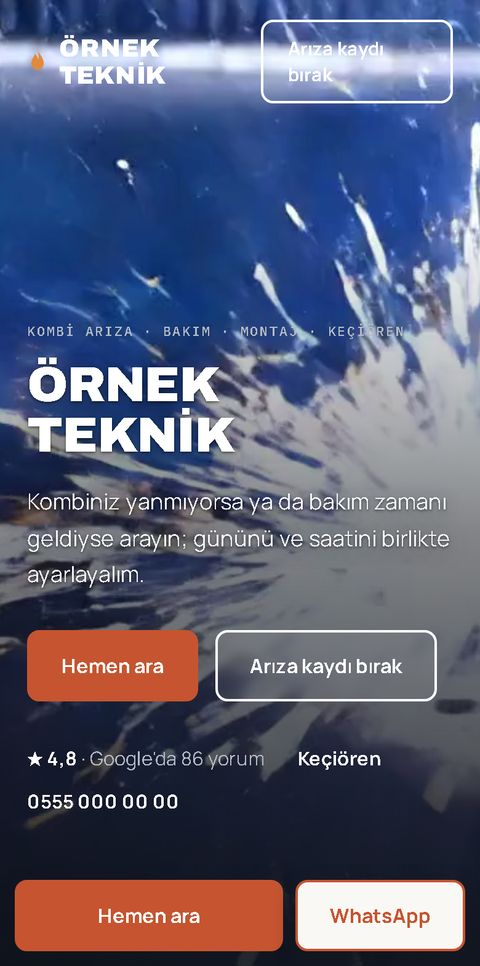
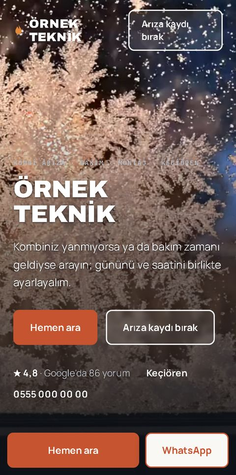
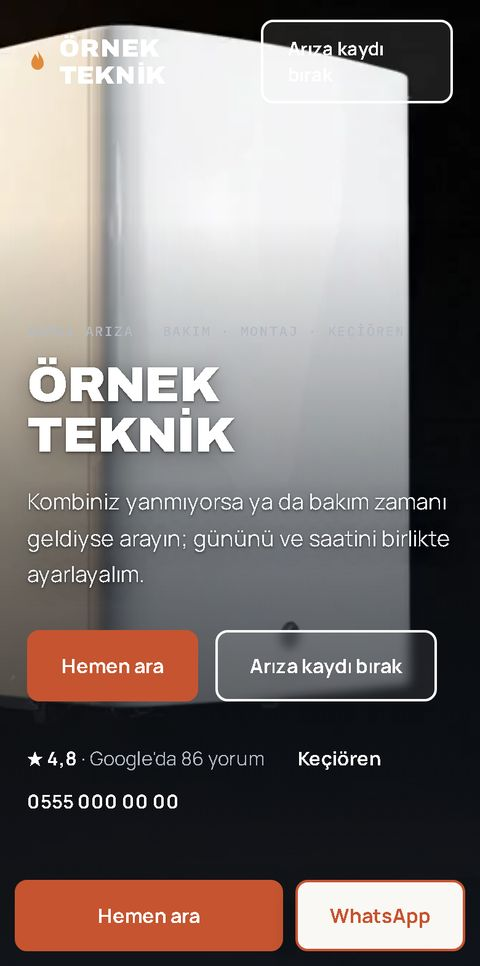
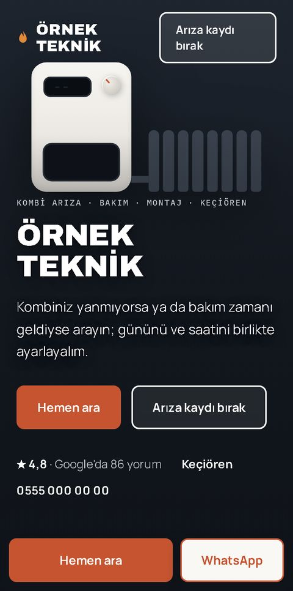

Kombi servisleri
4 örnek site, hangisini beğendiniz?
Dördünde de sayfanın içi aynı, açılıştaki görüntü değişiyor. Birine dokunun, örnek site açılır.
Beğendiğinizin numarasını bize mesajla yazmanız yeterli.
1

2

3

Kombi
Açılışta kombinin kendisi görünür, sade ve koyu.
Örnek 3'ü aç
4

Çizim
Açılışta kombi ve petek çizimi hareket eder. Video yok, en hızlı açılan bu.
Örnek 4'ü aç
Seçince ne olur?
Beğendiğiniz örneğin numarasını bize yazarsınız.
Aynı tasarımı sizin firma adınız, çalıştığınız semtler ve Google yorumlarınızla ücretsiz hazırlarız.
Bakarsınız. Beğenirseniz kurulumu konuşuruz, beğenmezseniz ödeme yok.